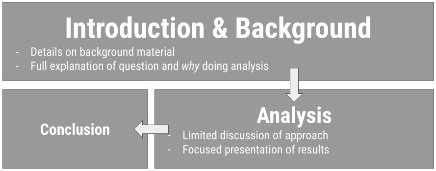
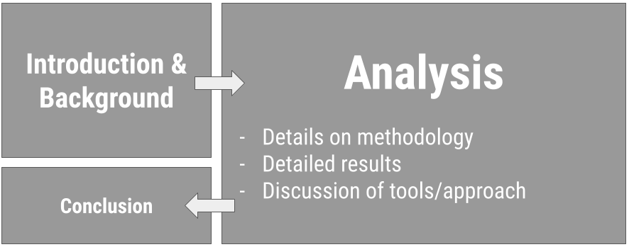
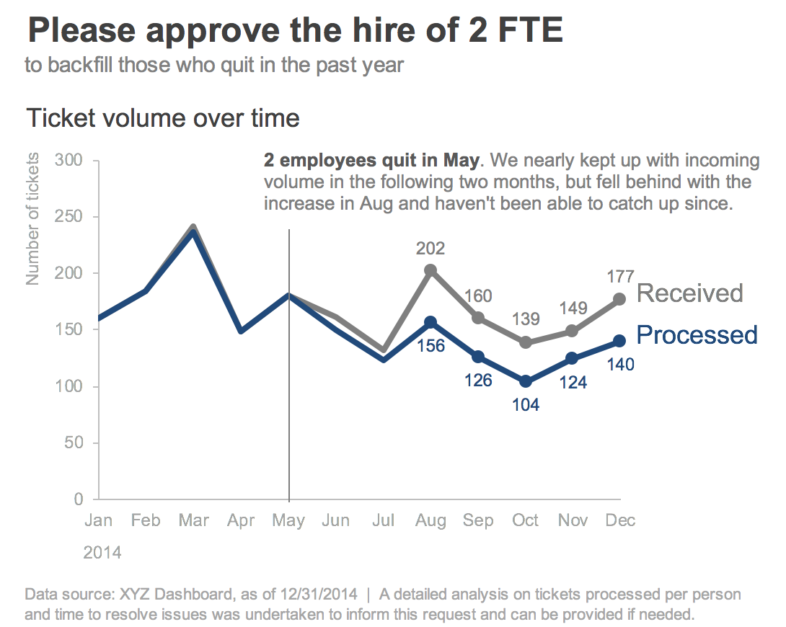
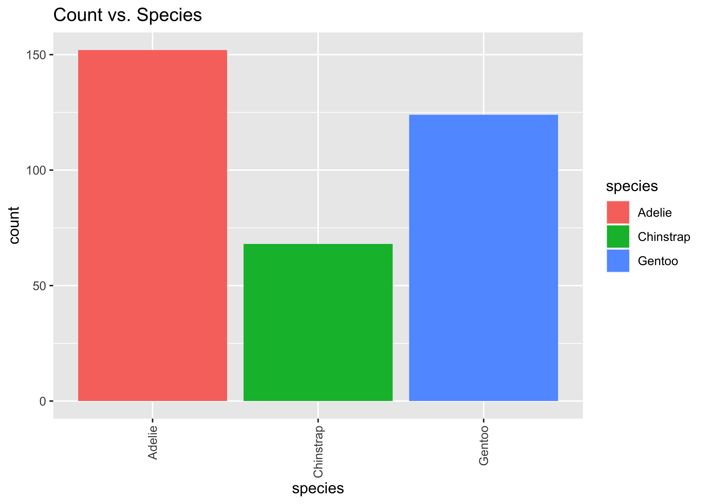
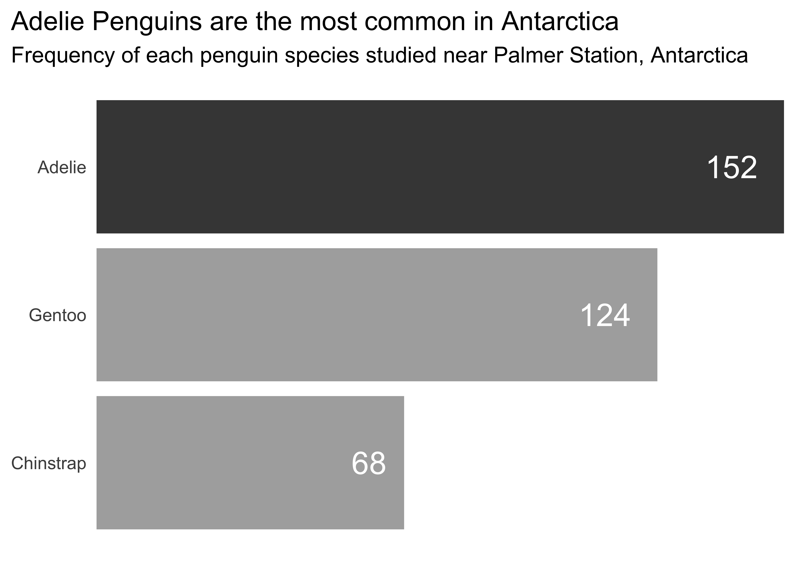

library(palmerpenguins)07-written-communication
Effective Written Communication
Q&A
Q: I am confused on how to draw meaning from the combined data visualizations because I don’t understand what difference between variables like thc and thcooh are (and the other compounds).
A: This is something I want groups to discuss/look into! And, we’ll discuss more of this today. But, also, check out this piazza post.
Q: Would sensitivity and specificity be related to type I and type II errors?
A: Yes! Type I Error (measured as 1-Specificity) is known as the false positive rate. Type II Error (1- Sensitivity) is also known as the false negative rate. These concepts are directly related.
[ad] CSS Masters Program
About the CSS MS Program:
UC San Diego’s one-year M.S. in Computational Social Science combines coursework approaches and formal models across social science disciplines with modern computational data analysis techniques. With a hands-on curriculum involving a summer bootcamp, core foundational training, in-depth electives across fields, and a portfolio-building capstone project, this program provides substantive and wide-ranging practice applying skill sets to real-world problems preparing graduates for careers in industry, public policy, education, non-profits, or for further academic study in a Ph.D. program.
[ad] COGS Transfers
Course Announcements
Due Dates:
- 🧪 Lab 04 due Thursday (11:59 PM)
- 💻 CS01 due Monday (11:59 PM)
- 📋 Lecture Participation survey “due” after class
- 💻 mid-course survey now available (due Fri at 11:59 PM)
Notes:
- lab 03 scores and feedback posted; everyone received feedback; check GH issue
- lab 05 is available and the focus this Fri/Mon lab…but not due until after CS01. Best to do it before CS01, as it will help CS01 completion
- Thursday will be semi-guided class time for working on your case study. Communicate with your group to encourage attendance.
Agenda
- Communicating for your audience
- Written Communication
- Visual Communication
Note: We’ll discuss oral communication closer to the end of the quarter, when you’ll have to present out loud.
Suggested Reading
- Bookdown Section 2.6 R Code Chunks & inline R code
- Bookdown Chapter 3: Documents
Consider your audience
What does this mean?
❓ What does it mean to “consider your audience?”
. . .
Simply: You do the work so they don’t have to.
. . .
…also the aesthetic-usability effect exists.
What’s the right level?
General Audience
✔ background
🚫 limit technical details
🎉 emphasize take-home

Technical Audience
⬇ limit background
💻 all-the-details
🎉 emphasize take-home

Considerations
- Platform: written? oral?
. . .
- Setting: informal? formal?
. . .
- Timing: never go over your time limit!
Choose informative titles
On presentations: Balance b/w short and informative (goal: concise)
. . .
Avoid: “Analyzing NHANES”
Better: “Data from the NHANES study shows that diet is related to overall health”
. . .
On visualizations: emphasize the take-home! (what’s learned or what action to take)
. . .
Avoid: “Boxplot of gender”
Better: “Twice as many females as males included for analysis”
. . .
Avoid: “Tickets vs. Time”
Better: “Staff unable to respond to incoming tickets; need to hire 2 FTEs”
Effective Written Communication
Benefits of written communciation
Your audience has time to process…but the explanation has to be there!
. . .
Visually: more on a single visualization
. . .
Yes, often there are different visualizations for reports/papers than for presentations/lectures.
When you have time to digest (read)

. . .
❓ What makes this an effective visualization for a written communication?”
Source: Storytelling wtih data by cole nussbaumer knaflic
Written Explanations
- Visualizations should be explained/interpreted
- Analyses/Models should be explained
- should be clear what question is being answered
- what conclusions is being drawn
- and what numbers were used to draw that conclusion
Data Science Reports in .Rmd
- As concise as possible
- Important information introduced before referenced (datasets, jargon, etc.)
- Necessary details (for your audience); nothing more
- Be sure that the knit output contains what you intended (plots displayed; headers etc.)
- …and does NOT display stuff that doesn’t need to be there (messages/warnings suppressed, brainstorming, etc.)
- Typical Sections: Introduction/Background, Setup, Data, Analysis, Conclusion, References
Controlling HTML document settings
- Table of Contents
---
title: "Document Title"
output:
html_document:
toc: true
toc_float: true
---. . .
- Theme
---
title: "Document Title"
output:
html_document:
theme: united
highlight: tango
---. . .
- Figure Options
---
title: "Document Title"
output:
html_document:
fig_width: 7
fig_height: 6
fig_caption: true
---. . .
- Code Folding
---
title: "Document Title"
output:
html_document:
code_folding: hide
---Controlling code chunk output
- Specified in the curly braces, separated by commas
. . .
eval: whether to execute the code chunkecho: whether to include the code in the outputwarning,message, anderror: whether to show warnings, messages, or errors in the knit documentfig.widthandfig.height: control the width/height of plots
. . .
- Controlling for the whole document:
knitr::opts_chunk$set(fig.width = 8, collapse = TRUE)Editing & Proofreading
- Did you end up telling a story?
- Things missing?
- Things to delete?
. . .
- Do not fall in love with your words/code/plots
. . .
- Do spell check
- Do read it over before sending/presenting/submitting
Aside: Citing Sources
When are citations needed?
. . .
“We will be doing our analysis using two different data sets created by two different groups: Donohue and Mustard + Lott, or simply Lott”
. . .
“What turned from the idea of carrying firearms to protect oneself from enemies such as the British monarchy and the unknown frontier of North America has now become a nationwide issue.”
. . .
“Right to Carry Laws refer to laws that specify how citizens are allowed to carry concealed handguns when they’re away from home without a permit”
. . .
“In this case study, we are examining the relationship between unemployment rate, poverty rate, police staffing, and violent crime rate.”
. . .
“In the United States, the second amendment permits the right to bear arms, and this law has not been changed since its creation in 1791.”
. . .
“The Right to Carry Laws (RTC) is defined as”a law that specifies if and how citizens are allowed to have a firearm on their person or nearby in public.””
. . .
Reminder: You do NOT get docked points for citing others’ work. You can be at risk of AI Violation if you don’t. When in doubt, give credit.
Footnotes in .Rmd
How to specify a footnote in text:
Here is some body text.[^1]How to include the footnote’s reference:
[^1]: This footnote will appear at the bottom of the page.Note: .bib files can be included with BibTeX references using the bibliography parameter in your YAML
Effective Visual Communication
The Glamour of Graphics
- builds on top of the grammar (components) of a graphic
- considerations for the design of a graphic
- color, typography, layout
- going from 😬accurate to 😍effective
These ideas and slides are all modified from Will Chase’s rstudio::conf2020 slides/talk
. . .
The following example uses the penguins dataset from the palmerpenguins package (would have to be installed to run these.)
An Example…
ggplot(penguins, aes(x = species, fill = species)) +
geom_bar() +
labs(title = "Count vs. Species") +
theme(axis.text.x = element_text(angle = 90, vjust = 0.5, hjust = 1))
ggplot(penguins, aes(y = fct_rev(fct_infreq(species)), fill = species)) +
geom_bar() +
geom_text(stat='count', aes(label=after_stat(count)), hjust = 1.5, color = "white", size = 7) +
scale_x_continuous(expand = c(0, 0)) +
scale_fill_manual(values = c("#454545", rep("#adadad", 2))) +
labs(title = "Adelie Penguins are the most common in Antarctica",
subtitle = "Frequency of each penguin species studied near Palmer Station, Antarctica") +
theme_minimal(base_size = 14) +
theme(axis.text.x = element_blank(),
plot.title.position = "plot",
panel.grid.major = element_blank(), panel.grid.minor = element_blank(),
axis.title = element_blank(),
legend.position = "none")
- Informative Titles
- Left Align Titles
- Borders & Backgrounds: 👎
- Organize & Remove/Lighten as much as possible
- Legends Suck
- Avoid head-tilting
Note
A reminder that when you’re doing EDA, you’re going to generate a lot of plots. Don’t spend your time making all of them beautiful. Save that for the “editing” portion of your case study. Once you know which are needed to tell your story, add them in.
Recap
- Tailor communication for setting and audience
- Written communication has benefit of time; limitation of additional explanation
- Can you control your HTML output from .Rmd document?
- Do you know when to cite a source?
- Can you implement design choices when generating visualizations for communication?